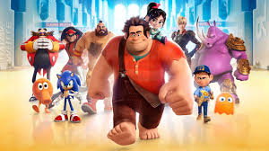

O filme Detona Ralph foi dirigido por Rich Moore, que ja dirigiu episódios dos Simpsons e Futurama, com o roteito escrito por Jennifer Lee e Phil Johnson. Detona Ralph é um filme de animação 3D, que foi produzido por Walt Disney Animatiom Studions e distribuído pela Walt Disney Pictures. Que é o 52º longa-metragem da série de classicos animados
Ralph está cansado da sua vida de vilão, pois é desprezado por todos do seu jogo. E ele queria ser o " bonzinho " para impressionar as pessoas e reber um pouco de carinho delas. E a única forma que ele encontrou para se tornar o "bonzinho " foi, ir atrás da sua propria medalha. Então ele foi! Com sua nova amiga e apartir dai começou suas aventuras, e derrotando o mal, deixou de ser durão e passou a ser igual uma manteiga derretida.
Independede da pessoa e de como ela seja o amor tem força para mudalo